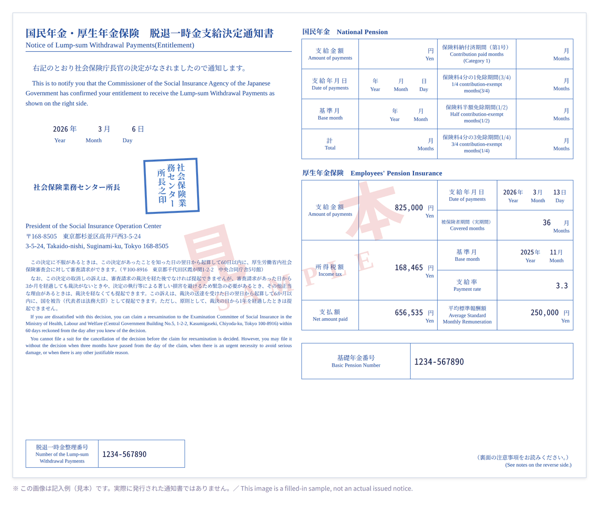
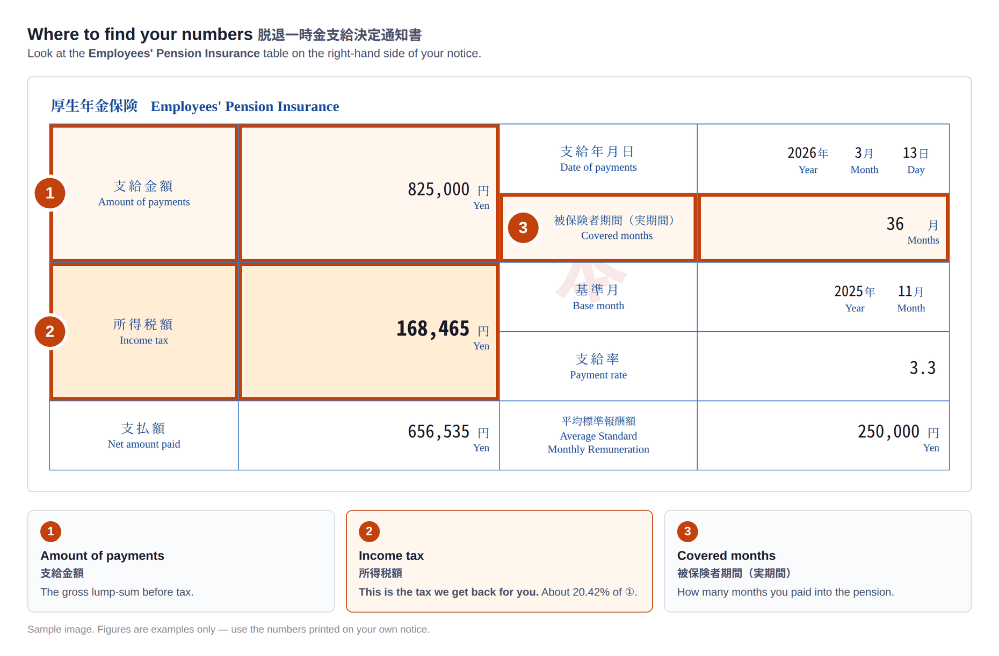

If you received the Lump-sum Withdrawal Payment in the last 5 years
脱退一時金を5年以内に受け取った方へ
Before your Lump-sum Withdrawal Payment (脱退一時金) was paid, a flat 20.42% was taken out as income tax. By filing a tax return in Japan, you can claim this tax back. Most people get all of it back, and even high earners recover over 90%. But it is not refunded unless a return is filed. A licensed tax accountant will tell you how much you can expect before anything is filed.

CHECK YOUR NOTICE
Look at the “Income tax” (所得税額) box on your Notice of Lump-sum Withdrawal Payments (脱退一時金支給決定通知書). That amount is the tax taken out before the money reached you.

Using the sample figures
In this example, ¥168,465 is the amount a tax return gets back. Most people get all of it back. You can claim for 5 years, so even if you left Japan several years ago, you may still be in time. Use the estimator below to check your own figures.
Lost your notice? You can still apply. We will explain how to get it re-issued after you apply.
Haven't received your notice yet? Please apply once it arrives. You have 5 years from then to claim.
ESTIMATE
Copy three numbers from your Notice of Lump-sum Withdrawal Payments.
Nothing is sent to us. Everything is calculated in your browser.
If you leave this blank, we assume 20.42% of ①.
Estimated refund from the Japanese tax office
¥0
This is an estimate based on the figures you entered, using the same formula as the actual return. The final amount is decided by the tax office. You pay nothing upfront. All fees are deducted after the refund arrives.
You can claim the refund for 5 years from January 1 of the year after you received the payment. If you received it in — or later, you can still apply.
This is a different deadline from the one for the Lump-sum Withdrawal Payment itself (2 years after leaving Japan). This service is for people who have already received the payment.
WHY IT IS REFUNDED
By the time the payment was made, you had already left Japan. So a flat 20.42% was withheld with no deductions at all.
Japan's Income Tax Act lets non-residents choose to be taxed on this payment as retirement income instead. This is called elective taxation on retirement income (退職所得の選択課税).
This method first subtracts a retirement income deduction (¥400,000 per year covered, at least ¥800,000). For most people the deduction is larger than the payment, so the tax becomes zero and the full 20.42% comes back.
The refund is your right by law. But it is not automatic. A tax return has to be filed in Japan, and because you live overseas, a tax agent in Japan (納税管理人) must be appointed first. That is what we do for you.
PROCESS
Usually 2–3 months from the day your original notice reaches us.
Enter your name, contact details and the bank account for your refund. No payment or card details are needed.
We will email you our mailing address and a checklist. If you lost the notice, you can still apply. We will explain how to get it re-issued.
A licensed tax accountant becomes your tax agent, prepares the return and files it with your tax office in Japan.
The tax office pays the refund into our office account. We deduct our fee and send the rest to the account you chose, then email you once it is sent.
BEFORE YOU CHOOSE
There are many refund services. Whichever one you use, please check these three things.
See “About us” below for how we meet these three points.
ABOUT US
Most of our clients apply from overseas. Here are facts you can check for yourself.
陽川 仁成
Certified Public Accountant · Certified Public Tax Accountant
FEES
Everything is deducted from your refund. You never pay in advance.
No upfront fee. You never send us money. We receive the refund from the tax office, deduct our fee, and send the rest to your account. If no refund is obtained, you pay nothing.
FAQ
APPLICATION
It takes about 5 minutes and costs nothing to start.
Apply nowNo upfront fee · No card required · Available in 6 languages